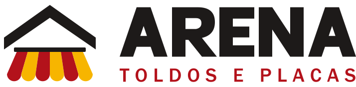

Logo

Criada do zero, mantendo as cores da logo antiga. Ícone: telhado com toldo listrado. Nome: letras de bloco desenhadas à mão.
Obra bem feita: preto-quente, vermelho de ação, amarelo de destaque e acabamento sóbrio de empresa de engenharia.

Criada do zero, mantendo as cores da logo antiga. Ícone: telhado com toldo listrado. Nome: letras de bloco desenhadas à mão.
Toldos e coberturas com preço justo
Archivo 800/900 em maiúsculas nos títulos e Figtree no corpo.
Um CTA por dobra. Sem preço e sem prazo em dias. Verde só no botão de WhatsApp. Fotos de obras reais em molduras e grades (têm uns 600 px de largura, não usar em tela cheia). Animações desligadas com prefers-reduced-motion.